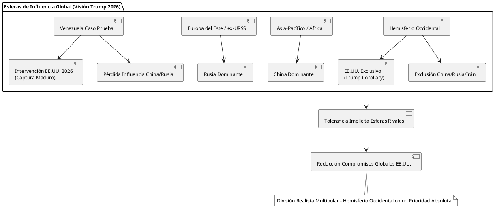

La Doctrina Monroe y las Esferas de Influencia de los Grandes Bloques: Situación Actual de Venezuela (2026)
La Doctrina Monroe y las Esferas de Influencia de los Grandes Bloques: Situación Actual de Venezuela (2026)
Introducción
La Doctrina Monroe (1823) estableció una división básica del mundo en esferas de influencia: el Hemisferio Occidental como zona exclusiva de influencia estadounidense, libre de interferencia europea, a cambio de no injerencia estadounidense en Europa. Esta lógica realista de esferas ha evolucionado, especialmente con el "Corolario Trump" introducido en la Estrategia de Seguridad Nacional de noviembre de 2025, que busca excluir a potencias extrahemisféricas (principalmente China y Rusia) del continente americano.
En enero de 2026, la intervención militar estadounidense en Venezuela —que culminó con la captura de Nicolás Maduro y el anuncio de una administración temporal por parte de EE.UU.— representa la aplicación práctica de este corolario, reafirmando el Hemisferio Occidental como esfera exclusiva de Washington.
Esferas de Influencia según la Doctrina Monroe: Visión Histórica y Actual
Doctrina Original (1823)
- Hemisferio Occidental (Américas): Esfera de influencia estadounidense; prohibida la colonización o intervención europea.
- Europa: Esfera europea; EE.UU. se compromete a no interferir.
Evolución (Corolarios y Adaptaciones)
- Corolario Roosevelt (1904): EE.UU. como "policía" del hemisferio para prevenir intervenciones europeas.
- Guerra Fría: Adaptación anticomunista (exclusión soviética).
- Corolario Trump (2025): Exclusión de competidores no hemisféricos (China, Rusia, Irán); prioridad en seguridad fronteriza, narcotráfico y recursos estratégicos.
División Actual de Esferas (Visión Trump 2026)
La administración Trump acepta implícitamente un mundo multipolar con esferas de influencia, tolerando dominios ruso y chino fuera del Hemisferio Occidental a cambio de exclusividad estadounidense en las Américas.
| Gran Potencia | Esfera Principal de Influencia | Tolerancia Implícita de EE.UU. (2026) | Amenazas Percibidas en Hemisferio Occidental |
|---|---|---|---|
| Estados Unidos | Hemisferio Occidental (América Latina, Caribe, Norteamérica) | Prioridad absoluta ("Trump Corollary") | Ninguna tolerada (exclusión China/Rusia) |
| China | Asia-Pacífico, África, partes de Eurasia (Franja y Ruta) | Aceptada fuera de Américas | Inversión en recursos (petróleo, minerales) |
| Rusia | Europa del Este, ex-URSS, Medio Oriente (Siria) | Aceptada (posible quid pro quo Ucrania) | Alianzas militares (Venezuela, Cuba, Nicaragua) |
| Unión Europea | Europa Occidental | Aliada de EE.UU. | Ninguna |
| Irán | Medio Oriente (chií) | No tolerada en Américas | Presencia limitada en Venezuela |
Explicación: La matriz refleja un realismo transaccional: EE.UU. prioriza su "patio trasero" mientras permite esferas rivales en otras regiones, reduciendo compromisos globales.
Situación Específica de Venezuela (Enero 2026)
Venezuela ha sido el "caso prueba" del Corolario Trump:
- Antecedentes: Régimen de Maduro aliado con China (préstamos >60.000 millones USD, petróleo por inversión) y Rusia (armas, asesores militares). Percibido como amenaza por migración masiva, narcotráfico y presencia extrahemisférica.
- Intervención 2026: Operación militar estadounidense (3-4 enero) captura a Maduro y su esposa; Trump anuncia que EE.UU. "administrará" el país hasta una "transición segura". Justificada como restauración de la Doctrina Monroe ("Donroe Doctrine" en broma de Trump).
- Impactos:
- Exclusión de rivales: China y Rusia pierden influencia directa; Pekín usa el caso para criticar "unilateralismo" estadounidense, pero no interviene militarmente.
- Control recursos: EE.UU. busca acceso prioritario a petróleo y minerales críticos (previamente mapeados por empresas chinas).
- Reacción regional: Condenas de Cuba, Nicaragua; apoyo cauteloso de aliados como Argentina y El Salvador.
- Implicaciones globales: Precedente para intervenciones; posible "acuerdo tácito" con Rusia (Venezuela por Ucrania).
Críticamente, esta acción refuerza la hegemonía estadounidense en el hemisferio pero genera resentimiento ("imperialismo desnudo") y riesgos de inestabilidad prolongada.
Diagrama PlantUML: Esferas de Influencia bajo el Corolario Trump (2026)

Referencias
- National Security Strategy of the United States (November 2025). The White House.
- The Guardian (30 dic 2025): "The Guardian view on the new Monroe doctrine".
- Al Jazeera (4 ene 2026): "What is the Monroe Doctrine, which Trump has cited over Venezuela?".
- Atlantic Council (3 ene 2026): "Experts react: The US just captured Maduro".
- POLITICO (4 ene 2026): "Trump’s Attack on Venezuela Could Change the World".
- Foreign Policy (diciembre 2025): "What Trump’s New Corollary to the Monroe Doctrine Means".
- EL PAÍS América (5 ene 2026): "¿Y si Venezuela es solo el principio?".
- BBC News Mundo (2025): "Venezuela: por qué China y Rusia parecen haber abandonado a Nicolás Maduro".